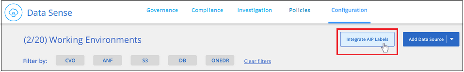
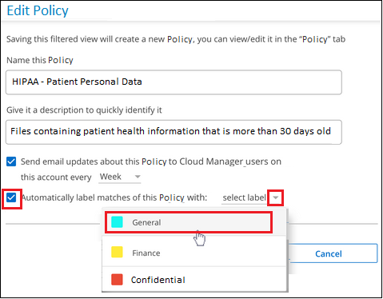

문서 변경 요청
문서 변경 요청 이 페이지 편집
이 페이지 편집 기여하는 방법 자세히 알아보기
기여하는 방법 자세히 알아보기개인 데이터 구성
Cloud Data Sense는 개인 데이터를 관리하고 구성할 수 있는 다양한 방법을 제공합니다. 따라서 가장 중요한 데이터를 더 쉽게 볼 수 있습니다.
-
에 가입되어 있는 경우 "AIP(Azure Information Protection)" 파일을 분류 및 보호하기 위해 Cloud Data Sense를 사용하여 AIP 레이블을 관리할 수 있습니다.
-
조직 또는 일부 유형의 추가 작업에 대해 표시할 파일에 태그를 추가할 수 있습니다.
-
Cloud Manager 사용자를 특정 파일 또는 여러 파일에 할당하여 파일 관리를 책임질 수 있습니다.
-
"정책" 기능을 사용하면 버튼 하나를 클릭하여 결과를 쉽게 볼 수 있도록 사용자 지정 검색 쿼리를 직접 만들 수 있습니다.
-
특정 중요 정책에서 결과를 반환하는 경우 Cloud Manager 사용자에게 이메일 경고를 보낼 수 있습니다.

|
이 섹션에 설명된 기능은 데이터 소스에서 전체 분류 검사를 수행하도록 선택한 경우에만 사용할 수 있습니다. 매핑 전용 스캔이 있는 데이터 원본은 파일 수준 세부 정보를 표시하지 않습니다. |
태그나 라벨을 사용해야 합니까?
다음은 Data Sense 태깅 및 Azure Information Protection 레이블과 비교한 것입니다.
| 태그 | 라벨 |
|---|---|
파일 태그는 데이터 센스의 통합된 부분입니다. |
Azure 정보 보호(AIP)에 가입해야 합니다. |
태그는 데이터 감지 데이터베이스에만 보관되며 파일에 기록되지 않습니다. 파일 또는 액세스되거나 수정된 파일은 변경되지 않습니다. |
레이블은 파일의 일부이며 레이블이 변경되면 파일이 변경됩니다. 또한 이 변경 사항은 액세스 및 수정된 파일 시간도 변경합니다. |
한 파일에 여러 개의 태그를 지정할 수 있습니다. |
단일 파일에 하나의 레이블이 있을 수 있습니다. |
태그는 복사, 이동, 삭제, 정책 실행 등의 내부 데이터 감지 작업에 사용할 수 있습니다. 등 |
파일을 읽을 수 있는 다른 시스템은 추가 자동화에 사용할 수 있는 레이블을 볼 수 있습니다. |
단일 API 호출만 사용하여 파일에 태그가 있는지 확인합니다. |
AIP 레이블을 사용하여 데이터를 분류합니다
구독한 경우 Cloud Data Sense에서 검색 중인 파일에서 AIP 레이블을 관리할 수 있습니다 "AIP(Azure Information Protection)". AIP를 사용하면 콘텐츠에 레이블을 적용하여 문서와 파일을 분류하고 보호할 수 있습니다. 데이터 센스를 사용하면 파일에 이미 할당된 라벨을 보고, 파일에 라벨을 추가하고, 라벨이 이미 있을 때 라벨을 변경할 수 있습니다.
Cloud Data Sense는 .DOC, .DOCX, .PDF, .PPTX, .XLS 파일 형식 내에서 AIP 레이블을 지원합니다. XLSX
|
|
|
작업 공간에 AIP 레이블 통합
AIP 레이블을 관리하려면 AIP 레이블 기능을 기존 Azure 계정에 로그인하여 Cloud Data Sense에 통합해야 합니다. 활성화되면 모든 파일의 AIP 레이블을 관리할 수 있습니다 "운영 환경 및 데이터 소스" 를 살펴보십시오.
-
계정 및 Azure 정보 보호 라이센스가 있어야 합니다.
-
Azure 계정에 대한 로그인 자격 증명이 있어야 합니다.
-
Amazon S3 버킷에 있는 파일의 레이블을 변경하려면 IAM 역할에 권한 '3:PutObject’가 포함되어 있는지 확인하십시오. 을 참조하십시오 "IAM 역할 설정".
-
클라우드 데이터 감지 구성 페이지에서 * AIP 레이블 통합 * 을 클릭합니다.

-
AIP 레이블 통합 대화 상자에서 * Azure에 로그인 * 을 클릭합니다.
-
Microsoft 페이지가 나타나면 계정을 선택하고 필요한 자격 증명을 입력합니다.
-
Cloud Data Sense 탭으로 돌아가면 "AIP 라벨이 <ACCOUNT_NAME> 계정과 성공적으로 통합되었습니다."라는 메시지가 표시됩니다.
-
닫기 * 를 클릭하면 페이지 상단에 _AIP 라벨 통합 _ 이라는 텍스트가 표시됩니다.

조사 페이지의 결과 창에서 AIP 레이블을 보고 할당할 수 있습니다. 정책을 사용하여 파일에 AIP 레이블을 할당할 수도 있습니다.
파일의 AIP 레이블 보기
파일에 할당된 현재 AIP 레이블을 볼 수 있습니다.
데이터 조사 결과 창에서 을 클릭합니다  파일 메타데이터 세부 정보를 확장합니다.
파일 메타데이터 세부 정보를 확장합니다.

AIP 레이블을 수동으로 할당합니다
Cloud Data Sense를 사용하여 파일에서 AIP 레이블을 추가, 변경 및 제거할 수 있습니다.
다음 단계에 따라 AIP 레이블을 단일 파일에 할당합니다.
-
데이터 조사 결과 창에서 을 클릭합니다
 파일 메타데이터 세부 정보를 확장합니다.
파일 메타데이터 세부 정보를 확장합니다.
-
이 파일에 레이블 지정 * 을 클릭한 다음 레이블을 선택합니다.
파일 메타데이터에 레이블이 나타납니다.
AIP 레이블을 여러 파일에 할당하려면 다음과 같이 하십시오.
-
데이터 조사 결과 창에서 레이블을 지정할 파일을 선택합니다.

-
개별 파일을 선택하려면 각 파일(
 )를 클릭합니다.
)를 클릭합니다. -
현재 페이지의 모든 파일을 선택하려면 제목 행(
 )를 클릭합니다.
)를 클릭합니다.
-
-
버튼 모음에서 * Label * 을 클릭하고 AIP 레이블을 선택합니다.

선택한 모든 파일의 메타데이터에 AIP 레이블이 추가됩니다.
AIP 레이블을 정책에 자동으로 할당합니다
정책 기준을 충족하는 모든 파일에 AIP 레이블을 할당할 수 있습니다. 정책을 생성할 때 AIP 레이블을 지정하거나 정책을 편집할 때 레이블을 추가할 수 있습니다.
Cloud Data Sense가 파일을 스캔하면 파일에 레이블이 계속 추가되거나 업데이트됩니다.
레이블이 파일에 이미 적용되었는지 여부와 레이블의 분류 수준에 따라 레이블을 변경할 때 다음 작업이 수행됩니다.
| 파일이… | 그러면… |
|---|---|
레이블이 없습니다 |
라벨이 추가됩니다 |
낮은 수준의 분류에 대한 기존 레이블이 있습니다 |
더 높은 수준의 라벨이 추가됩니다 |
더 높은 수준의 분류에 대한 기존 레이블이 있습니다 |
더 높은 수준의 레이블이 유지됩니다 |
는 수동으로 또는 정책에 의해 레이블이 할당됩니다 |
더 높은 수준의 라벨이 추가됩니다 |
는 두 정책에 의해 두 개의 서로 다른 레이블을 할당합니다 |
더 높은 수준의 라벨이 추가됩니다 |
기존 정책에 AIP 레이블을 추가하려면 다음 단계를 따르십시오.
-
정책 목록 페이지에서 AIP 레이블을 추가하거나 변경할 정책에 대해 * 편집 * 을 클릭합니다.

-
정책 편집 페이지에서 확인란을 선택하여 정책 매개 변수와 일치하는 파일에 대해 자동 레이블을 활성화하고 레이블을 선택합니다(예: * General *).

-
Save Policy * 를 클릭하면 Policy 설명에 레이블이 표시됩니다.
|
|
정책이 레이블로 구성되었지만 이후에 AIP에서 레이블이 제거된 경우 레이블 이름은 OFF로 설정되고 레이블은 더 이상 할당되지 않습니다. |
AIP 통합 제거
파일에서 AIP 레이블을 더 이상 관리할 수 없는 경우 Cloud Data Sense 인터페이스에서 AIP 계정을 제거할 수 있습니다.
데이터 센스를 사용하여 추가한 레이블은 변경되지 않습니다. 파일에 있는 레이블은 현재 있는 그대로 유지됩니다.
-
Configuration_페이지에서 * AIP Labels integrated > Remove Integration * 을 클릭합니다.
-
확인 대화 상자에서 * 통합 제거 * 를 클릭합니다.
태그를 적용하여 스캔한 파일을 관리합니다
특정 유형의 추가 작업에 대해 표시할 파일에 태그를 추가할 수 있습니다. 예를 들어 일부 중복 파일을 발견하여 이 중 하나를 삭제하려 할 수 있지만 삭제해야 할 파일을 확인해야 합니다. 파일에 "삭제 확인"이라는 태그를 추가할 수 있으므로 이 파일에 몇 가지 조사 및 향후 작업이 필요하다는 것을 알 수 있습니다.
Data Sense를 사용하면 파일에 할당된 태그를 보거나, 파일에서 태그를 추가 또는 제거하거나, 이름을 변경하거나, 기존 태그를 삭제할 수 있습니다.
AIP 레이블과 같은 방식으로 태그가 파일에 추가되지 않습니다. 이 태그는 Cloud Data Sense를 사용하는 Cloud Manager 사용자가 볼 수 있으므로 파일을 삭제하거나 일부 후속 작업 유형을 확인해야 하는지 확인할 수 있습니다.

|
Cloud Data Sense에서 파일에 할당된 태그는 볼륨 또는 가상 머신 인스턴스와 같은 리소스에 추가할 수 있는 태그와 관련이 없습니다. 데이터 감지 태그는 파일 레벨에 적용됩니다. |
특정 태그가 적용된 파일 보기
특정 태그가 지정된 모든 파일을 볼 수 있습니다.
-
클라우드 데이터 센스에서 * 조사 * 탭을 클릭합니다.
-
데이터 조사 페이지의 필터 창에서 * 태그 * 를 클릭한 다음 필요한 태그를 선택합니다.

조사 결과 창에는 해당 태그가 지정된 모든 파일이 표시됩니다.
파일에 태그 지정
단일 파일 또는 파일 그룹에 태그를 추가할 수 있습니다.
단일 파일에 태그 추가하기:
-
데이터 조사 결과 창에서 을 클릭합니다
파일 메타데이터 세부 정보를 확장합니다. -
태그 * 필드를 클릭하면 현재 할당된 태그가 표시됩니다.
-
태그 또는 태그 추가:
-
기존 태그를 지정하려면 * 새 태그… * 필드를 클릭하고 태그 이름을 입력합니다. 찾고 있는 태그가 나타나면 해당 태그를 선택하고 * Enter * 를 누릅니다.
-
새 태그를 만들어 파일에 할당하려면 * 새 태그… * 필드를 클릭하고 새 태그의 이름을 입력한 다음 * Enter * 를 누릅니다.

태그가 파일 메타데이터에 나타납니다.
-
여러 파일에 태그 추가하기:
-
데이터 조사 결과 창에서 태그를 지정할 파일을 선택합니다.
-
개별 파일을 선택하려면 각 파일(
)를 클릭합니다. -
현재 페이지의 모든 파일을 선택하려면 제목 행(
)를 클릭합니다.
-
-
버튼 모음에서 * 태그 * 를 클릭하면 현재 할당된 태그가 표시됩니다.
-
태그 또는 태그 추가:
-
기존 태그를 지정하려면 * 새 태그… * 필드를 클릭하고 태그 이름을 입력합니다. 찾고 있는 태그가 나타나면 해당 태그를 선택하고 * Enter * 를 누릅니다.
-
새 태그를 만들어 파일에 할당하려면 * 새 태그… * 필드를 클릭하고 새 태그의 이름을 입력한 다음 * Enter * 를 누릅니다.

-
-
승인 확인 대화 상자에서 태그 추가를 승인하고 선택한 모든 파일의 메타데이터에 태그가 추가됩니다.
파일에서 태그를 삭제하는 중입니다
더 이상 사용하지 않아도 되는 태그는 삭제할 수 있습니다.
기존 태그에 대해 * x * 를 클릭하기만 하면 됩니다.

여러 파일을 선택한 경우 태그가 모든 파일에서 제거됩니다.
특정 파일을 관리할 사용자 할당
Cloud Manager 사용자를 특정 파일 또는 여러 파일에 할당하여 해당 파일에 대해 수행해야 하는 후속 작업을 책임질 수 있습니다. 이 기능은 종종 기능과 함께 사용되어 파일에 사용자 정의 상태 태그를 추가합니다.
예를 들어 너무 많은 사용자가 읽기 및 쓰기 액세스(열린 권한)를 수행할 수 있도록 특정 개인 데이터가 포함된 파일이 있을 수 있습니다. 따라서 상태 태그 "권한 변경"을 할당하고 이 파일을 사용자 "Joan Smith"에게 할당하여 문제 해결 방법을 결정할 수 있습니다. 문제를 해결하면 상태 태그를 "완료됨"으로 변경할 수 있습니다.
사용자 이름은 파일 메타데이터의 일부로 파일에 추가되지 않습니다. Cloud Data Sense를 사용할 때 Cloud Manager 사용자만 이 이름을 볼 수 있습니다.
조사 페이지의 새 필터를 사용하면 "담당자" 필드에 동일한 사람이 있는 모든 파일을 쉽게 볼 수 있습니다.
사용자를 단일 파일에 할당하려면 다음을 수행합니다.
-
데이터 조사 결과 창에서 을 클릭합니다
파일 메타데이터 세부 정보를 확장합니다. -
Assigned to * 필드를 클릭하고 사용자 이름을 선택합니다.

사용자 이름이 파일 메타데이터에 나타납니다.
사용자를 여러 파일에 할당하려면:
-
데이터 조사 결과 창에서 사용자에게 할당할 파일을 선택합니다.
-
개별 파일을 선택하려면 각 파일(
)를 클릭합니다. -
현재 페이지의 모든 파일을 선택하려면 제목 행(
)를 클릭합니다.
-
-
버튼 모음에서 * Assign to * (할당 대상 *)를 클릭하고 사용자 이름을 선택합니다.

선택한 모든 파일의 메타데이터에 사용자가 추가됩니다.
정책을 사용하여 데이터 제어
정책은 자주 요청하는 규정 준수 쿼리에 대한 조사 페이지에 검색 결과를 제공하는 사용자 지정 필터의 즐겨찾기 목록과 같습니다. Cloud Data Sense는 일반적인 고객 요청에 따라 미리 정의된 정책 세트를 제공합니다. 조직에 특정한 검색 결과를 제공하는 사용자 지정 정책을 만들 수 있습니다.
정책은 다음과 같은 기능을 제공합니다.
-
사전 정의된 정책 구성하는 방법에 대해 설명합니다
-
고유한 사용자 지정 정책을 만들 수 있습니다
-
클릭 한 번으로 정책의 결과가 포함된 조사 페이지를 시작합니다
-
특정 중요 정책에서 결과를 반환할 때 Cloud Manager 사용자에게 이메일 경고를 보내 데이터를 보호하기 위한 알림을 받을 수 있습니다
-
AIP(Azure Information Protection) 레이블을 정책에 정의된 조건과 일치하는 모든 파일에 자동으로 할당합니다
-
특정 정책이 결과를 반환하면 데이터를 자동으로 보호할 수 있도록 파일을 자동으로 삭제합니다(하루에 한 번)
규정 준수 대시보드의 * Policies * 탭에는 이 Cloud Data Sense 인스턴스에서 사용할 수 있는 사전 정의된 정책과 맞춤형 정책이 모두 나열됩니다.

또한 조사 페이지의 필터 목록에 정책이 표시됩니다.
조사 페이지에서 정책 결과를 봅니다
조사 페이지에 정책의 결과를 표시하려면 을 클릭합니다  단추를 클릭하여 특정 정책을 선택한 다음 * 결과 조사 * 를 선택합니다.
단추를 클릭하여 특정 정책을 선택한 다음 * 결과 조사 * 를 선택합니다.

사용자 지정 정책을 만드는 중입니다
조직에 맞는 검색 결과를 제공하는 사용자 지정 정책을 만들 수 있습니다.
-
데이터 조사 페이지에서 사용할 필터를 모두 선택하여 검색을 정의합니다. 을 참조하십시오 "데이터 조사 페이지의 데이터 필터링" 를 참조하십시오.
-
원하는 방식으로 모든 필터 특성을 찾은 후 * 이 검색에서 정책 생성 * 을 클릭합니다.

-
정책의 이름을 지정하고 정책에서 수행할 수 있는 다른 작업을 선택합니다.
-
고유한 이름과 설명을 입력합니다.
-
필요한 경우 정책 매개 변수와 일치하는 파일을 자동으로 삭제하려면 확인란을 선택합니다. 에 대해 자세히 알아보십시오 "정책을 사용하여 소스 파일을 삭제하는 중입니다".
-
필요한 경우 알림 이메일을 Cloud Manager 사용자에게 보내려면 확인란을 선택하고 이메일을 보낼 간격을 선택합니다. 에 대해 자세히 알아보십시오 "정책 결과에 따라 이메일 알림을 보냅니다".
-
필요한 경우 정책 매개 변수와 일치하는 파일에 AIP 레이블을 자동으로 할당하려면 확인란을 선택하고 레이블을 선택합니다. (이미 AIP 레이블을 통합한 경우에만 해당됩니다. 에 대해 자세히 알아보십시오 "AIP 레이블"참조)
-
Create Policy * 를 클릭합니다.

-
새 정책이 정책 탭에 나타납니다.
규정을 준수하지 않는 데이터가 발견되면 이메일 경고를 보냅니다
Cloud Data Sense는 특정 중요 정책이 결과를 반환할 때 클라우드 관리자 사용자에게 이메일 경고를 보내 데이터를 보호하기 위한 알림을 받을 수 있도록 합니다. 매일, 매주 또는 매월 이메일 알림을 보내도록 선택할 수 있습니다.
정책을 만들거나 정책을 편집할 때 이 설정을 구성할 수 있습니다.
기존 정책에 전자 메일 업데이트를 추가하려면 다음 단계를 따릅니다.
-
정책 목록 페이지에서 이메일 설정을 추가(또는 변경)할 정책에 대해 * 편집 * 을 클릭합니다.

-
정책 편집 페이지에서 Cloud Manager 사용자에게 알림 이메일을 보내려면 확인란을 선택하고 이메일을 보낼 간격을 선택합니다(예: 매 * 주 *).

-
정책 저장 * 을 클릭하면 이메일이 전송되는 간격이 정책 설명에 표시됩니다.
정책의 결과가 있는 경우 첫 번째 이메일이 전송되지만 정책 기준을 충족하는 파일이 있는 경우에만 전송됩니다. 알림 이메일에는 개인 정보가 전송되지 않습니다. 이메일에는 정책 기준과 일치하는 파일이 있으며 정책 결과에 대한 링크가 표시됩니다.
정책 편집
정책 유형에 따라 정책의 특정 부분을 수정할 수 있습니다.
-
사용자 지정 정책 - Name, Description, 이메일 알림 전송 여부 및 AIP 레이블 추가 여부를 수정할 수 있습니다.
-
사전 정의된 정책 - 이메일 알림 전송 여부와 AIP 레이블 추가 여부만 수정할 수 있습니다.
|
|
사용자 지정 정책의 필터 매개 변수를 변경해야 하는 경우 원하는 매개 변수를 사용하여 새 정책을 만든 다음 이전 정책을 삭제해야 합니다. |
정책을 수정하려면 * 편집 * 버튼을 클릭하고 _정책 편집_페이지에 변경 사항을 입력한 다음 * 정책 저장 * 을 클릭합니다.
정책을 삭제하는 중입니다
사용자 지정 정책이 더 이상 필요하지 않은 경우 만든 모든 사용자 지정 정책을 삭제할 수 있습니다. 미리 정의된 정책은 삭제할 수 없습니다.
정책을 삭제하려면 를 클릭합니다 특정 정책의 버튼 * 정책 삭제 * 를 클릭한 다음 확인 대화 상자에서 * 정책 삭제 * 를 다시 클릭합니다.
사전 정의된 정책 목록입니다
Cloud Data Sense는 다음과 같은 시스템 정의 정책을 제공합니다.
| 이름 | 설명 | 논리 |
|---|---|---|
S3 공개된 프라이빗 데이터 |
S3 개인 정보 또는 민감한 개인 정보가 포함된 개체(공개 공개 공개 공개 공개 읽기 액세스 포함). |
S3 공용 및 개인 정보 또는 민감한 개인 정보 포함 |
PCI DSS – 30일 이상 오래된 데이터 |
신용 카드 정보가 포함된 파일로, 30일 전에 마지막으로 수정되었습니다. |
신용 카드가 포함되어 있으며 30일 동안 마지막으로 수정한 것입니다 |
HIPAA – 30일 이상 오래된 데이터 |
30일 전에 마지막으로 수정된 상태 정보가 포함된 파일 |
건강 데이터(HIPAA 보고서와 같은 방식으로 정의) 및 30일 동안 마지막으로 수정된 상태 데이터가 포함됩니다 |
프라이빗 데이터가 7년 이상 오래되었습니다 |
7년 전에 마지막으로 수정한 개인 정보 또는 민감한 개인 정보가 포함된 파일 |
7년 전에 마지막으로 수정한 개인 정보 또는 민감한 개인 정보가 포함된 파일 |
GDPR – 유럽 시민 |
EU 국가의 시민권자 또는 EU 국가의 시민을 식별할 수 있는 DB 테이블의 5개 이상의 식별자를 포함하는 파일. |
한 국가의 EU 식별자가 포함된 열의 15% 이상이 포함된 행을 포함하는 (1) EU 시민 또는 DB 테이블의 5개 이상의 식별자를 포함하는 파일. (유럽 국가의 국가 식별자 중 하나. 브라질, 캘리포니아, 미국 SSN, 이스라엘, 남아프리카 제외) |
CCPA – 캘리포니아 주민 |
이 식별자가 포함된 10개 이상의 California Driver의 라이센스 식별자 또는 DB 테이블을 포함하는 파일입니다. |
10개 이상의 캘리포니아 드라이버 라이센스 식별자 또는 캘리포니아 드라이버 라이센스가 포함된 DB 테이블이 포함된 파일 |
데이터 주체 이름 – 높은 위험 |
데이터 주체 이름이 50개 이상인 파일 |
데이터 주체 이름이 50개 이상인 파일 |
이메일 주소 – 높은 위험 |
이메일 주소가 50개 이상인 파일 또는 이메일 주소가 포함된 행의 50% 이상이 있는 DB 열 |
이메일 주소가 50개 이상인 파일 또는 이메일 주소가 포함된 행의 50% 이상이 있는 DB 열 |
개인 데이터 – 높은 위험 |
개인 데이터 식별자가 20개가 넘는 파일 또는 개인 데이터 식별자가 포함된 행의 50% 이상이 포함된 DB 열 |
20개가 넘는 개인 파일 또는 개인 행이 50% 이상 포함된 DB 열 |
민감한 개인 데이터 – 높은 위험 |
중요한 개인 데이터 식별자가 20개가 넘는 파일 또는 중요한 개인 데이터가 포함된 행의 50% 이상이 포함된 DB 열 |
20개 이상의 민감한 개인 파일이 있는 파일 또는 중요한 개인 정보가 포함된 행의 50% 이상이 있는 DB 열 |